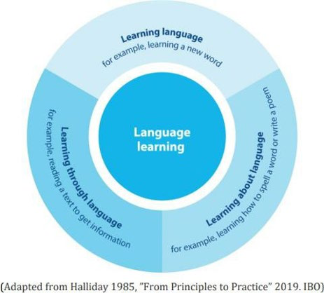

Language Policy
How we teach English and Arabic, how we value each family’s home language, and the support for students still learning English.
At a glance
- At FA, all teachers are language teachers and all students are language learners.
- Arabic is taught five times a week in Grades K–5. In Grades 6–10, an Arabic placement test places each student in a beginner, intermediate or advanced level.
- English language learners get daily designated English instruction, GLAD strategies, push-in support and online tutoring.
- All written communication to families is translated into Arabic, with free simultaneous Arabic interpretation at community events.
1. What is the Purpose of the Language Policy?
- Achieve a common understanding of our aims and objectives for language learning and teaching
- Explain how to meet the diverse needs of our students in their language acquisition
- Create a working document that will help guide staff in their practices
- Clearly communicate the language programs offered at FA in both the PYP and MYP programs.
2. Language Philosophy
At FA, all teachers are language teachers and all students are language learners.
Each student has his or her own linguistic background making unique contributions to our learning community as a whole, and recognizing this is crucial for defining cognitive development and maintaining cultural identity. At FA we commit to provide a learning community that promotes and supports language development in a multilingual environment. Our goal is to foster international-mindedness while learning a new language and valuing the student’s home language.
We support the IB belief that:
“All students bring a significant body of language knowledge to school with them; knowledge about language and the way it works, knowledge about learning language, and knowledge of the social role of language.”
We welcome and recognize each student’s unique identity as a language learner and embrace the aspects of language learning as shown in the infographic below.

3. Support for Home and Family Languages and Support of Regional Language and Culture
In all programs, initiatives and events, FA is conscious of and responsive to our diverse community. We recognize the importance of supporting students’ home language as well as the regional languages and cultures that enrich our society. This commitment to community and language is evidenced in the following:
- We encourage the maintenance and development of home languages
- We provide free simultaneous Arabic interpretation at all community events
- All written communication to parents and community is translated into Arabic
- Translators for conferences, and meetings when needed
- Multiple Arabic/English bilingual teaching and support staff
- Multiple culture events and celebrations take place in our community
- Libraries provide a variety of resources in Arabic
- Primary and Middle school students are provided laptops to support their translation needs
4. Language Learning in the Elementary School Setting K–5
FA emphasizes learning through language. Language is fundamental to learning, thinking, and communicating, and plays a central role in the curriculum. To create a unique, multilingual learning environment and to foster global awareness and understanding, we introduce Arabic as a second language in the primary grades. The amount of Arabic instruction provided, 5 times a week, enables students to participate in learning, while gaining confidence in the new language.
5. Student Support for Multilingual English Language Learners for English Learning
To support Multilingual English Language Learners, FA provides the following resources:
- Guided Language Acquisition Design (GLAD) strategies to support English Language Development and provide access to curriculum content
- Integrated English language instruction for all students
- Daily designated English language instruction for English language learners
- Classroom differentiation
- Small group Tier 2 push-in support and online tutoring are provided by Literacy Specialists for students in need.
6. Staff Support
- Arabic Team Meetings
- Collaboration about Language Continuum with Elementary and Middle School language teachers with respect to language curriculum, assessment, and preparation for language exams.
- English and Arabic language teams meet regularly to discuss and plan for instruction in subjects taught in both languages.
7. Assessment
The purpose of assessment in language acquisition is to determine students’ strengths and growth areas, guide meaningful instruction, improve student learning, and inform stakeholders.
- Students are given the opportunity to creatively demonstrate their language knowledge via a variety of mediums: oral presentations, exhibitions, performances, and multimedia presentations in both languages.
- Multiple standard measures to assess student language proficiency are used in grades K–5
8. Language Learning in the Middle School Setting 6th–10th Grade
We offer students the opportunity to learn Arabic, realizing that each student is on an individual language journey. Our goal is to help every student reach their highest possible IB phase of second-language acquisition and/or language and literature during their time at FA. We use language as a tool to help the learner interpret the world around them. Language fosters inquiry, global thinking, and communication.
9. Students Who are Not Yet Proficient in English
Students who have not yet reached proficiency in English receive additional support inside the classroom. English and math academic support is done by specialist through push-in model.
10. Language Acquisition Offerings and Pathways
At the beginning of the academic year, students take an Arabic language proficiency placement test that helps language teachers decide the correct language acquisition phase. The same pertains to new students enrolling mid-year.
FA offers three distinct levels for students joining us from various different language backgrounds. To support the unique needs of each of these levels FA has developed the following Language Continuum:
- Level 1 & 1+: Beginner
- Level 2 & 2+: Intermediate
- Level 3 and 4: Advanced
11. References & Acknowledgment
This policy reflects IB-aligned language learning philosophy. It adapts structures and language from publicly shared IB language policies while tailoring them to Falcon Academy’s context, academic support, and Arabic pathways.
12. Policy Review
Falcon Academy Language Policy will be reviewed by the learning community annually.
This page shows the full text of the official Language Policy (August 2026), approved by the School Leadership Team. Questions? Contact the front office.